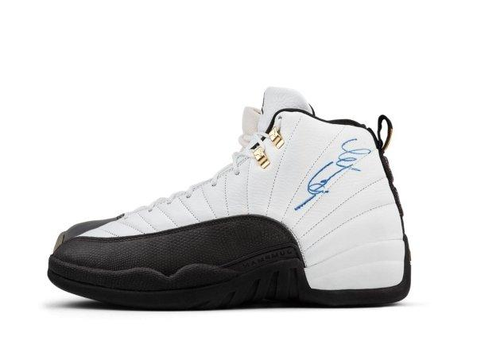

História do Air Jordan 12:
Lançado em 1996, o Air Jordan 12 foi inspirado na bandeira japonesa do sol nascente, refletindo força e resiliência. Criado por Tinker Hatfield, o modelo apresentou um design elegante com costuras que lembram raios solares.
O AJ12 foi o tênis que Michael Jordan usou durante a temporada de 1996-97, incluindo o famoso jogo conhecido como “Flu Game”, onde ele jogou mesmo doente e ajudou o Chicago Bulls a vencer.
Além de seu estilo marcante, o AJ12 foi o primeiro a usar uma unidade Zoom Air, proporcionando melhor amortecimento e desempenho.